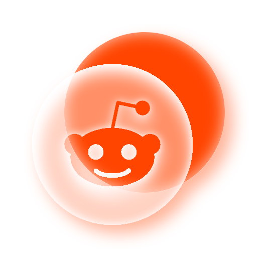
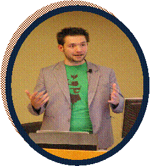
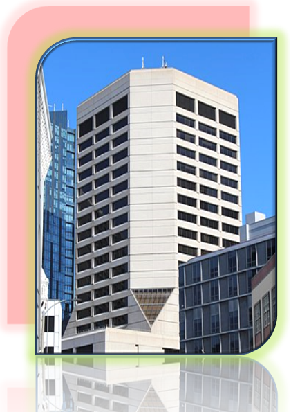

Reddit este un site american de agregare de știri sociale , de evaluare a conținutului și de discuții . Utilizatorii înregistrați (numiți în mod obișnuit „Redditori”) trimit conținut pe site, cum ar fi linkuri, postări text, imagini și videoclipuri, care sunt apoi votate în sus sau în josde către alți membri. Postările sunt organizate pe subiecte în panouri create de utilizatori numite „comunități” sau „subreddits”. Trimiterile cu mai multe voturi pozitive apar în partea de sus a subreddit-ului lor și, dacă primesc suficiente voturi pozitive, în cele din urmă pe prima pagină a site-ului. Administratorii Reddit moderează comunitățile. Moderarea este, de asemenea, condusă de moderatori specifici comunității, care nu sunt angajați Reddit.
În decembrie 2022, Reddit se clasează pe locul 20 cel mai vizitat site din lume și pe locul 6 cel mai vizitat site din SUA, conform Semrush. Aproximativ 42–49,3% din baza sa de utilizatori provine din Statele Unite, urmată de Regatul Unit cu 7,9–8,2% și Canada cu 5,2–7,8%. Douăzeci și doi la sută dintre adulții din SUA cu vârsta cuprinsă între 18 și 29 de ani și 14 la sută dintre adulții din SUA cu vârsta cuprinsă între 30 și 49 de ani folosesc în mod regulat Reddit.
Reddit a fost fondat de colegii de cameră de la Universitatea Virginia, Steve Huffman și Alexis Ohanian , împreună cu Aaron Swartz , în 2005. Condé Nast Publications a achiziționat site-ul în octombrie 2006. În 2011, Reddit a devenit o subsidiară independentă a companiei-mamă a lui Condé Nast, Advance Publications . [11] În octombrie 2014, Reddit a strâns 50 de milioane de dolari într-o rundă de finanțare condusă de Sam Altman și incluzând investitorii Marc Andreessen , Peter Thiel , Ron Conway , Snoop Dogg și Jared Leto . Investiția lor a evaluat compania la 500 de milioane de dolari atunci. În iulie 2017, Reddit a strâns 200 de milioane de dolari pentru o evaluare de 1,8 miliarde de dolari, Advance Publications rămânând părțile interesate majoritare. În februarie 2019, o rundă de finanțare de 300 de milioane de dolari condusă de Tencent a adus evaluarea companiei la 3 miliarde de dolari. În august 2021, o rundă de finanțare de 700 de milioane de dolari condusă de Fidelity Investments a ridicat această evaluare la peste 10 miliarde de dolari. Compania a depus apoi o IPO în decembrie 2021, cu o evaluare de 15 miliarde de dolari.
Istoric
Ideea și dezvoltarea inițială a Reddit-ului au apărut la colegii de cameră de la acea vreme, Steve Huffman și
Alexis Ohanian , în 2005. Huffman și Ohanian au participat la o prelegere susținută de programatorul-antreprenor
Paul Graham în Boston, Massachusetts , în timpul vacanței de primăvară de la Universitatea Virginia. După ce a
vorbit cu Huffman și Ohanian în urma prelegerii, Graham i-a invitat pe cei doi să aplice la incubatorul său de
pornire Y Combinator. Ideea lor inițială, My Mobile Menu, a eșuat și era menită să permită
utilizatorilor să comande mâncare prin mesaje text SMS. În timpul unei sesiuni de brainstorming
pentru a prezenta un alt startup, a fost creată ideea pentru ceea ce Graham a numit „prima pagină a internetului”.
Pentru această idee, Huffman și Ohanian au fost acceptați în prima clasă a lui Y Combinator. Sprijinit de
finanțarea de la Y Combinator, Huffman a codificat site-ul în Common Lisp și împreună cu Ohanian a
lansat Reddit în iunie 2005. Rușinat de un site cu aspect gol. , fondatorii au creat sute de utilizatori
falși pentru postările lor pentru a face ca acesta să pară mai populat, un exemplu de strategie falsă până
când o faci.

Echipa sa extins pentru a include Christopher Slowe în noiembrie 2005. Între noiembrie 2005 și ianuarie 2006, Reddit a fuzionat cu compania Infogami a lui Aaron Swartz , iar Swartz a devenit proprietar egal al companiei-mamă rezultată, Not A Bug. Ohanian a scris mai târziu că în loc să-l eticheteze pe Swartz ca co-fondator, descrierea corectă este că compania lui Swartz a fost achiziționată de Reddit la 6 luni după ce el și Huffman au început. și Ohanian au vândut Reddit către Condé Nast Publications, proprietarul Wired, pe 31 octombrie 2006, pentru o valoare raportată de la 10 la 20 de milioane de dolari și echipa sa mutat la San Francisco. În noiembrie 2006, Swartz a scris pe blog plângându-se de noul mediu corporativ, criticând nivelul său de productivitate. În ianuarie 2007, Swartz a fost concediat din motive nedezvăluite.
Huffman și Ohanian au părăsit Reddit în 2009. Huffman a continuat să co-fondeze Hipmunk cu Adam Goldstein, iar mai târziu i-a recrutat pe Ohanian și Slowe în noua sa companie. După ce Huffman și Ohanian au părăsit Reddit, Erik Martin, care s-a alăturat companiei în calitate de community manager în 2008 și a devenit ulterior director general în 2011, a jucat un rol în creșterea Reddit. VentureBeat a remarcat că Martin era „responsabil pentru menținerea site-ului în funcțiune” sub proprietatea lui Condé Nast. Martin a facilitat achiziția Reddit Gifts și a condus inițiative de caritate.
Reddit a lansat două moduri diferite de publicitate pe site în 2009. Compania a lansat conținut sponsorizat și o platformă de anunțuri self-service în acel an. Reddit și-a lansat programul de beneficii Reddit Gold în iulie 2010, care a oferit noi funcții editorilor și a creat un nou flux de venituri pentru afacere care nu se baza pe reclame banner. La 6 septembrie 2011, Reddit a devenit independent din punct de vedere operațional de Condé Nast, operând ca o subsidiară separată a companiei-mamă, Advance Publications. Reddit și alte site-uri web au participat la o întrerupere de 12 ore la nivelul întregului site la 18 ianuarie 2012, în semn de protest față de Legea Stop Online Piracy. În mai 2012, Reddit s-a alăturat Ligii de Apărare a Internetului , un grup format pentru a organiza viitoare proteste.